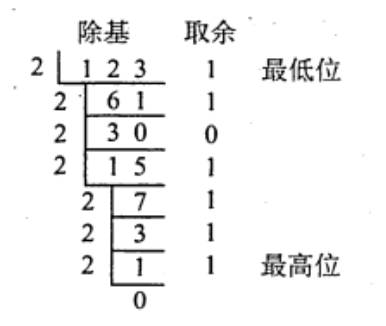
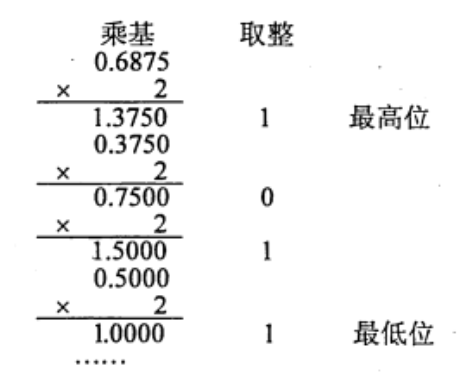

2022.04.04
n进制转十进制：
2、8、16进制转换：可以三个，四个二进制位为一组进行转换（小数部分也同样）
十进制转n进制：
整数部分：辗转相除：
我的理解：
- 先除出来的是经历最多2倍后剩下的，是最小的零头，所以是最低位
- 最后除法得0可以继续不停的除2，取余一直是0，在最高位才能不停补零

小数部分：乘积取余：
我的理解：
一乘就取到整数了，说明它本来就很大，离小数点最近。

定点整数与小数
原码
符号位：零正一负
数值：本身
表示范围关于原点对称：
我的理解：因为正零和负零都是零，导致所有表示的内容正好对半分。
反码
符号位：和原码一样，零正一负
数值：(负数)逐位取反
表示范围关于原点对称：
我的理解：反码和原码一一对应
补码
移码
图像举例
| 编码 | 000 | 001 | 010 | 011 | 100 | 101 | 110 | 111 |
|---|---|---|---|---|---|---|---|---|
| 原码 | +0 | +1 | +2 | +3 | -0 | -1 | -2 | -3 |
| 反码 | +0 | +1 | +2 | +3 | -3 | -2 | -1 | -0 |
| 补码 | +0 | +1 | +2 | +3 | -4 | -3 | -2 | -1 |
| 移码 | -4 | -3 | -2 | -1 | +0 | +1 | +2 | +3 |
我的理解：
一开始，人们为了简单的表示数字，只表示数字的绝对值
后来绝对值只能表示非负数，就在前边加一个1表示负号，诞生了【原码】
为了解决让加法与减法都只使用加法器，诞生了【反码】，比如
但是反码仍然拥有两个0，我们把反码负数部分减一，就得到了【补码】，可以发现，补码仍然拥有反码的那些好处！而且还可以多表示一个数，可以理解成，原码的负零不需要了，就可以表示一个最小的数～
整数补码多一个
，小数补码多一个 . 变形补码，就是双符号位00是正，11是负
为了比大小方便，我们把补码的符号位取反，就诞生了【移码】，这样我们就可以通过二进制大小直接确认真值的大小了了
实际上，移码的诞生是补码加一个偏执值。本例子中，偏执值是
.
8421码：有权码，结果大于9，加六修正
余3码：8421码结果加
2421码：0xxx表示0-4，1xxx表示5-9
例题
若
A.x1为0，其他各位任意
B.x1为1，其他各位任意
C.x1为1，x2-x5中至少有一位为1
D.x1为0，x2-x5中至少有一位为1
设x为真值，x*为其绝对值，满足
A.x任意
B.x为正数
C.x为负数
D.以上说法都不对
在计算机中，通常用来表示主存地址的是(D)。
A,移码
B.补码
C.原码
D.无符号数
关于模4补码，下列说法正的的是（）。 A. 模4 补码和模2 补码不同，它更容易检查乘除运算中的溢出问题 B. 每个模4 补码存储时只需一个符号位 C. 存储每个模4补码需要两个符号位 D. 模4补码，在算术与逻輯部件中为一个符号位
答案：B. 存储模4补码需要一个符号位，ALU使用模4补码需要两个符号位